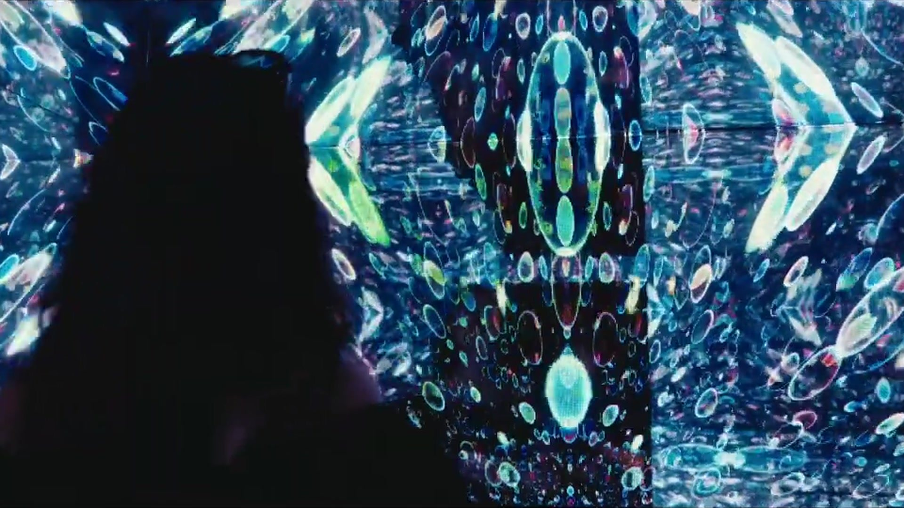
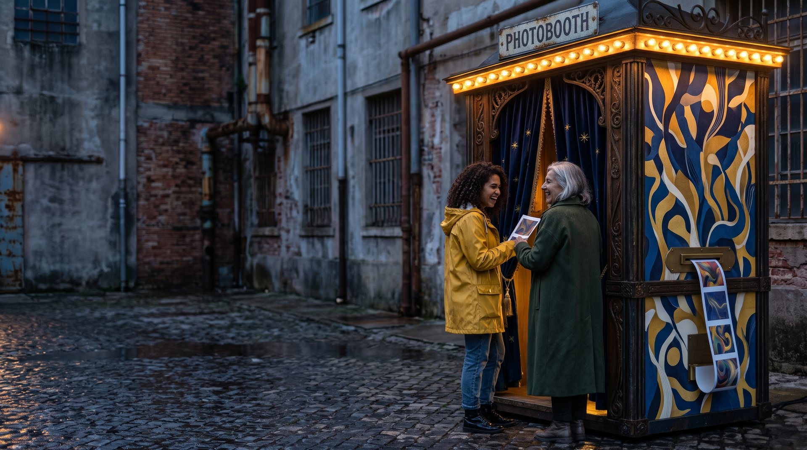
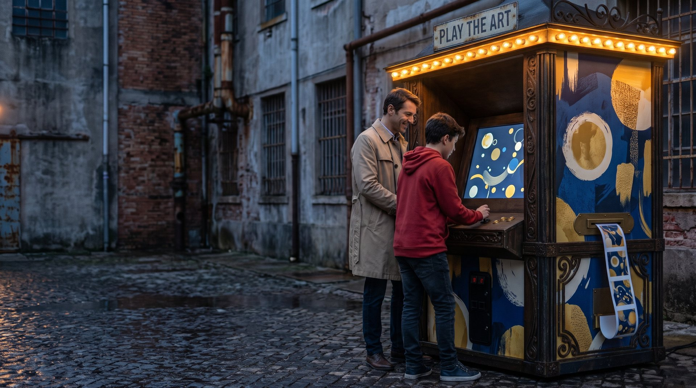
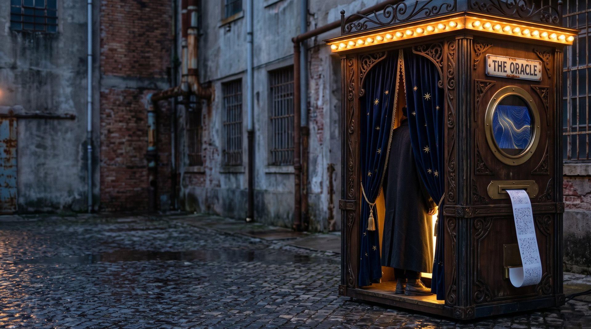
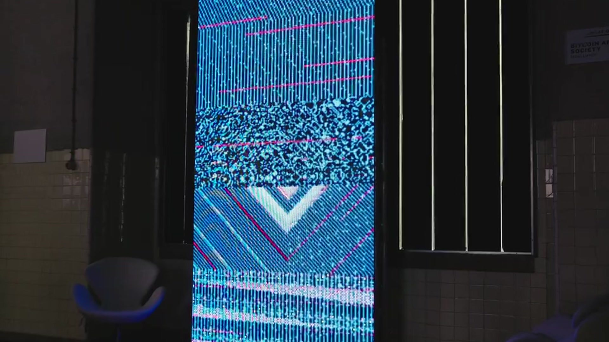
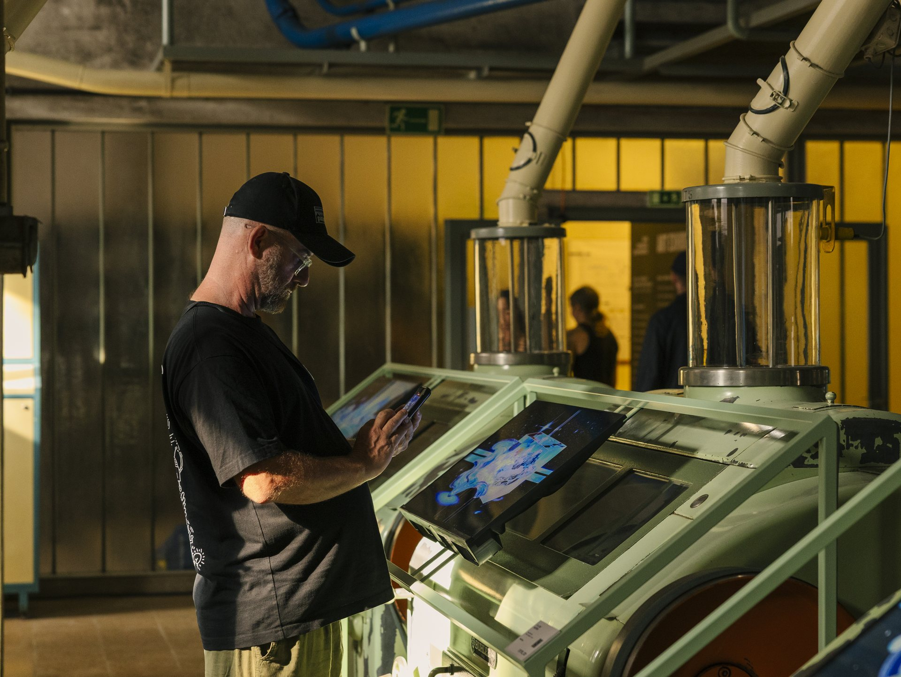

Lisbon · February — October 2027
FAIR PLAY
An art exhibition you can play. Artists build the rides, AI runs inside.
By NFC Summit, the digital art festival of Lisbon

In 2027, Lisbon is the city of AI and creativity.
A museum show on AI, Devcon, Web Summit and NFC Summit, in one year.

FAIR PLAY is its art show.
The one you can play.
In short
What it is
An art exhibition
Curated. Every ride is a work by an artist.
You can play
One minute per ride. AI turns your game into an artwork.
For everyone
Locals, families and every crowd that visits Lisbon in 2027.
All year
From February to October. Our goal: 10,000 artworks made by visitors.
FAIR PLAY — the art show you can play
04
Why Lisbon, why 2027
One city, one year
February
Online hackathon and art jams open the season
27 — 29 May
Premiere at NFC Summit, with the Hackathon · AI Day
15 September
MAAT opens “Energies of AI”. We host a panel and activations
12 — 14 October
Devcon, at the Lisbon Congress Centre. Our finale
8 — 11 November
Web Summit
Residencies from March to May. The fair travels across Lisbon all summer.
FAIR PLAY — the art show you can play
05

The rule
Everyone leaves
with art.
How every ride works
One minute,
one artwork
You pay for an artwork, never for a chance.
01
Pay
Tap a card or a phone. No app, no account.
02
Play
Sixty to ninety seconds. A camera watches you.
03
Generate
AI turns your face and your score into a piece in the artist’s world.
04
Win
Everyone gets a print. Beat the target for an edition.
FAIR PLAY — the art show you can play
07
The machines that make the crowd · concept visuals
One artist per machine
The same booth, a different world each time. Then claws, shooting galleries, a paintball roll, darts.

Ten photobooths
You sit down. The artist’s model remakes your portrait.

Ten arcades
You play for 90 seconds. Your score generates your artwork.
FAIR PLAY — the art show you can play
08

Signature rides · concept visual
Play the question
The Oracle
Why do we trust a voice?
Behind the curtain, a fortune-teller that shows how it thinks.
The Hall of Doubles
What am I to a model?
Every mirror remakes you differently.
The Wheel of Odds
Chance or prediction?
The AI calls the result. You bet with it or against it.
The Robot Portraitist
Who is the author?
A robot looks at you and draws.
And the Two-Hand Claw, the Agents’ Arena, the Train of Layers…
FAIR PLAY — the art show you can play
09

Who builds it
The artists.

On the walls and screens of NFC Summit 2026
The artists are already here
XCOPY · Dmitri Cherniak · Larva Labs · Jack Butcher · Kim Asendorf · Gretchen Andrew · Vhils · Hackatao · Botto · Efdot · Coldie · Operator
More than 200 artists exhibited in 2026, in a four-floor Art Factory.
Photo: Guillermo Vidal · installation by Vhils and BOLDTRON, NFC Summit 2026
11
First ideas · a wish list, not a line-up
Every ride, its AI, its artist
The ride
What the AI does
The artist we imagine
The photobooth
An image model remakes your portrait in their style.
Mr Richi, Efdot, Coldie…
The arcade
An image model turns your score into an artwork.
Polygon1993, DeafBeef…
The Oracle
A language and voice model answers, and shows why.
Sasha Stiles
The Hall of Doubles
Several image models, each with its own idea of you.
Trevor Paglen
The Wheel of Odds
A prediction model calls the result before the spin.
Gretchen Andrew
The Robot Portraitist
A vision model guides the drawing arm.
Patrick Tresset
The Two-Hand Claw
An agent steers the claw. You can take over.
Dmitri Cherniak
The Agents’ Arena
Agents compete under rules the crowd rewrites.
Botto
FAIR PLAY — the art show you can play
12
From the NFC network · wish list
And thirty machines to sign
Photobooths
Mr Richi
Efdot
Coldie
Emi Kusano
Amrit Pal Singh
Kim Asendorf
Arcades
Polygon1993
Cypherdudes
DeafBeef
Nicolas Sassoon
Bryan Brinkman
Zach Lieberman
Snowfro
Claws, shooting galleries and more
Hackatao
Karmic
Tschuuuly
die with the most likes
Mad Dog Jones
Trevor Jones
Operator
beeple
FAIR PLAY — the art show you can play
13
Who is behind it
NFC Summit
The digital art and culture festival of Lisbon. Sixth edition in 2027.
2,740
Visitors in 2026
79
Countries
200+
Artists exhibited
150+
Speakers
6M+
Organic impressions
For a founding partner
Your part.
01
Your models inside the rides.
02
Your team in the residencies.
03
Your name on the season.
Our part.
The artists
A curated line-up, paid and credited.
The fair
Machines, booths, staff, payment and printing.
The audiences
Digital art in May, Lisbon all year, Ethereum and tech in the autumn.
FAIR PLAY — the art show you can play
15
FAIR PLAY · Lisbon 2027
Build a ride
A 20-minute call, then a proposal made for your team.
John Karp · john@nonfungibleconference.com · t.me/thejonnkarp